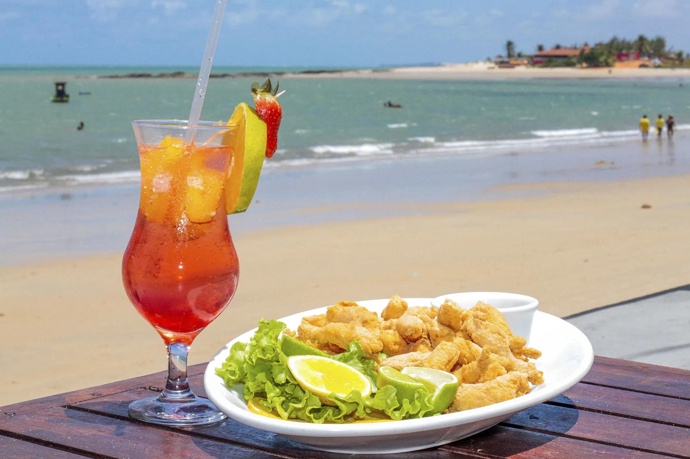

Siri na Lata Bar & Restaurante
Cardápio
Tudo feito na hora, pensado para dividir com a mesa toda.


Siri na Lata, frutos do mar

Pé na areia no Balneário Estreito
Petisco de mar com o pé na areia.
Frutos do mar, porções e cerveja gelada de frente para a Baía, no Balneário Estreito. De quarta a domingo, do almoço até a noite.
Siri na Lata Bar & Restaurante
Tudo feito na hora, pensado para dividir com a mesa toda.
Siri na Lata, frutos do mar
Porções para 2 a 3 pessoas
Siri na Lata, petiscos

Mesa de praia pede prato no meio e todo mundo se servindo.

Siri na Lata, para dividir
Acompanham arroz, pirão e salada
Os pratos chegam em panela de barro, direto para o meio da mesa.
Siri na Lata, para dividir
Crocante por fora, sequinho por dentro e quente até a última.

Siri na Lata, porções
Para quem não abre mão de um boteco
Siri na Lata, porções

Gelada no ponto e o mar fazendo a trilha sonora.

Siri na Lata, para beber
Para completar o pedido
Cervejas long neck e de garrafa, chope, caipirinhas, drinks, sucos e refrigerantes. Pergunte ao garçom pelas cervejas da semana.
Preços em reais, sujeitos a alteração sem aviso. Itens conforme disponibilidade do dia.
Um dia no Siri na Lata

11h às 15h
Peixe frito com pirão
Mesa na sombra das árvores, pé na areia e o peixe com pirão chegando fumegando. Aqui o almoço não tem pressa.
15h às 18h
Caipirinha e chope gelado
A luz baixa sobre a Baía, o chope suando no copo e a primeira porção para dividir. A hora mais disputada da casa.
18h às 22h
Camarão completo
As luzes acendem, a conversa rende e, em alguns dias, tem música ao vivo para fechar a noite com a mesa cheia.
Cardápio
Arraste para ver, toque no + para montar o seu pedido.
Duas unidades gratinadas com farofa da casa
Empanado na hora, com molho tártaro
Peixe do dia empanado, com molho tártaro
Peixe do dia frito, com pirão, arroz e salada, serve 2
Camarão frito com fritas, arroz, pirão e salada, serve 2
Camarão empanado com batata frita e molho da casa
A casa
O Siri na Lata nasceu da vontade de juntar duas paixões da Ilha: frutos do mar fresquinhos e aquele bar de esquina onde todo mundo se sente em casa. Fica no Balneário Estreito, no continente, com mesas para o almoço de quarta a domingo e para o fim de tarde que vira noite.
A cozinha trabalha com siri, camarão, lula, peixe e ostras da região, preparados na hora. Para quem não come frutos do mar, tem kibe, pastel, batata frita, arroz e salada no mesmo capricho.
Nas paredes, quadros que contam um pouco da cultura local. Em alguns dias, música ao vivo para acompanhar o petisco.
Aqui a ideia é simples: frutos do mar bem feitos, porção que chega fumegando e cerveja na temperatura certa. Cozinhamos com o que o mar da Grande Florianópolis oferece de melhor e servimos do jeito que a gente gosta de comer, sem pressa, com a mesa cheia e conversa boa.
Equipe Siri na Lata

Participamos do concurso com o torpedo de siri, servido com molho rosé de alho-poró e brócolis tostado na manteiga.

Reservas e eventos
Do almoço em família à confraternização da firma, a gente separa a mesa e prepara tudo para você só chegar.
Pagamento: Pix, Cartão de crédito, Cartão de débito, Vale-refeição, Dinheiro.Taxa de serviço de 10% opcional.
Perguntas frequentes
Não achou o que procurava? Chama a gente no WhatsApp que a resposta vem rapidinho.
Falar com a genteNão é obrigatório, mas recomendamos para sexta, sábado e domingo e para grupos acima de 6 pessoas. A reserva é gratuita e feita pelo WhatsApp.
De quarta a sábado, das 11h às 22h. Aos domingos, das 11h às 17h. Segunda e terça a casa fica fechada.
Tem sim. Kibe, pastel de carne e de queijo, coxinha, batata frita, aipim, arroz e salada. Dá para montar uma mesa inteira sem frutos do mar.
Os petiscos do mar servem bem de 2 a 3 pessoas. Os pratos para dividir servem 2 pessoas e vêm com arroz, pirão e salada. A isca de peixe também tem meia porção.
Fazemos retirada no balcão: é só pedir pelo WhatsApp e passar para buscar. Para entrega, consulte a disponibilidade na hora do pedido.
Pix, cartões de crédito e débito, vale-refeição e dinheiro.
Pode e deve. Para grupos de 10 a 30 pessoas separamos uma área, você pode trazer o bolo e o aniversariante ganha uma porção de bolinho de siri. Combine pelo WhatsApp com 2 dias de antecedência.
Em alguns dias da semana, sim. A programação sai sempre no nosso Instagram.